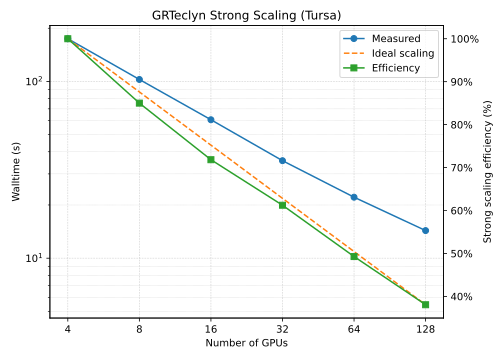
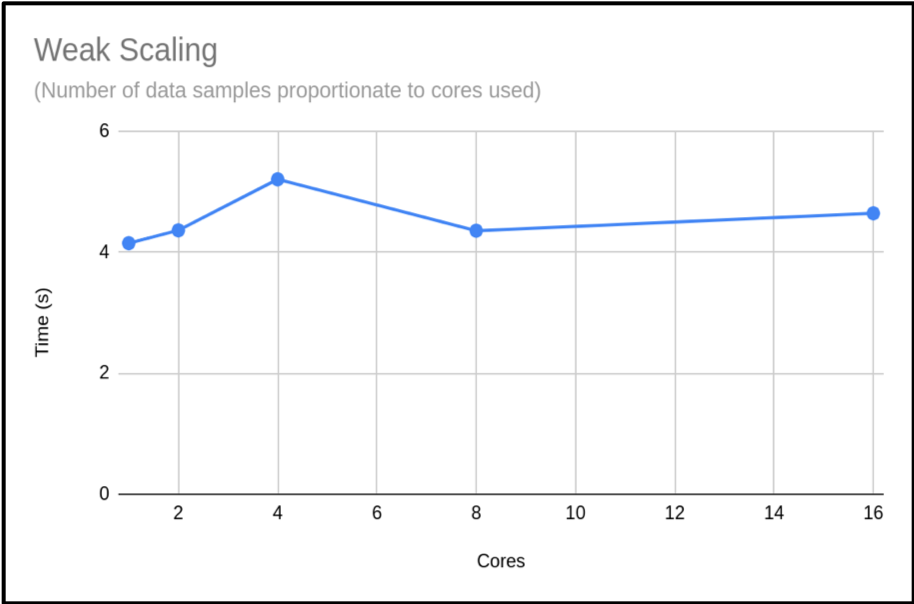

Applying for HPC resources: Technical Assessment
UKNR 2026 Meeting
Miren Radia
University of Cambridge
Monday 07 December 2026
Introduction and motivation
Background and caveats
- I have been involved with technical assessments of DiRAC RAC applications for the last 4 years.
- All of what I’ll say directly relates to the technical assessment for DiRAC RAC applications.
- Most of it should be applicable to applications to other providers such as
- EuroHPC
- UKRI National Compute Resources (NCR)
- etc.
Why do I need to provide this information?
- We want to be able to:
- Understand whether your project/applications will be a good fit for the requested resources.
- Work out whether alternative resources might be more appropriate.
- Ensure that resources are used efficiently and effectively.
- Fairly balance the resources when the total demand exceeds what’s available.
- Identify opportunities for potential RSE support in order to increase the efficiency of compute resources (more science per resource hour).
Scaling and performance
Strong scaling, weak scaling and profiling
- The amount of computational resource can be the number of CPU cores/GPUs/nodes.
- Sometimes, only one of strong/weak scaling is relevant (e.g. if problem sizes are fixed).
Strong scaling
- Measures how time to solution/speed-up varies for a fixed problem size as the amount of computational resources increases.
- Usually compared to the smallest resource size.
- Ideal/perfect: Increasing resources by a factor of \(n\) gives an \(n\times\) speed-up.
Weak scaling
- Measures how time to solution varies as the problem size per unit of resource is held constant.
- Ideal/perfect: The time to solution is constant as the amount of resources is varied.
Profiling
- Measures how software behaves at runtime. Can cover many aspects including:
- CPU usage
- Memory usage
- Communication
- GPU usage
- Time spent in routines/functions
Strong scaling
- Either:
- Choose a representative problem size for your project.
- If your problem size varies, construct a problem size that fills as much of the available resources (i.e. memory) as possible for the smallest computational resource size you are testing (e.g. a full node).
- Plot on a log-log scale as this makes the ideal scaling a straight line.
- Here I have also plotted the scaling efficiency, which is the percentage of the ideal speed-up achieved (ideally only want to run in >50-70% efficiency regime).
- Tailing off in scaling performance is inevitable as resources increase.
- Small bumps or jumps are also fine.

Weak scaling
- This is relevant if problem sizes (e.g. resolution) are not fixed.
- For the smallest resource size, start with a problem size that fills as much of the available resources (i.e. memory) as possible.
- As the number of resources increases, increase the problem size proportionally so that the work per unit of resource remains the same.
- For example, when you double the number of cores, you could double the length of the grid(s) in a single dimension.
- Again, small bumps are fine and some drop in scaling is normal.

Considerations for scaling
- Run on the same system/architecture you are applying for (or as close as possible). DiRAC guidance says within the last 5 years.
- Ideally have at least 4 different resource sizes.
- Generally easiest to double the number of resources from the base (e.g. 64, 128, 256, 512 cores).
- Be explicit in describing your problem sizes used for scaling plots and how they relate to the problem sizes you intend to run as part of your project.
- Label and caption your plots clearly!
- Best to show both a plot and a table of results.
Profiling
- It’s possible to have good scaling but poor overall performance.
- We are looking for evidence that your software is efficient and some effort has been made to understand its performance characteristics for a fixed resource size.
- You can use your code’s internal timers or profiling tools e.g.
perf,gprof, Intel VTune, NVIDIA Nsight Systems or Linaro MAP (commercial) - Use a representative problem size for your project and a fixed resource size (e.g. 1 node).
- If you are profiling on resources smaller than a full node, remember to request exclusive access (on systems which allow node-sharing) to avoid contention with other users’ jobs.

Profiling results for all codes involved in the UKNR benchmarking exercise on 4 Tursa/COSMA8 nodes.
Other parts of the application
Software and support requirements
- Details of high-level software requirements – we don’t need to know every single underlying dependency.
- We need to know about any unusual requirements (e.g. specific versions of libraries, commercial software licences).
- Let us know what optimizations have been done to the code, particularly if they were done on the system you are applying for resources on. This is helpful if you don’t have time to run new profiling.
- Also let us know if optimizations still need to be done and whether RSE support is required.
- If you’re not sure, just ask!
Data production and transfer
- We need to know how much data will be produced (even if it will be deleted shortly after it’s written) including
- Rough number of files
- Approximate size of files
- Unusually large numbers for either may require special management.
- We also need to know how much data will be transferred to/from the system. If very large data transfers are required, we can point you to specific solutions for this (e.g. Globus).
Resource request
- Job mix table: Please make sure the numbers add up to the total amount of requested resources (many DiRAC RAC applications don’t do this).
- Ensure the job sizes are in the regime where your code scales well (e.g. >50-70% scaling efficiency).
- Ideally link job sizes to explicit problem sizes from your scaling plots.
- Check the resource limits of the system you are applying for (e.g. max job size, walltime).
- Make sure storage requests are reasonable in the context of your workflow and the amount of data produced from each job.
- You shouldn’t expect to keep all data produced until the end of your project without clear justification.
Any questions?